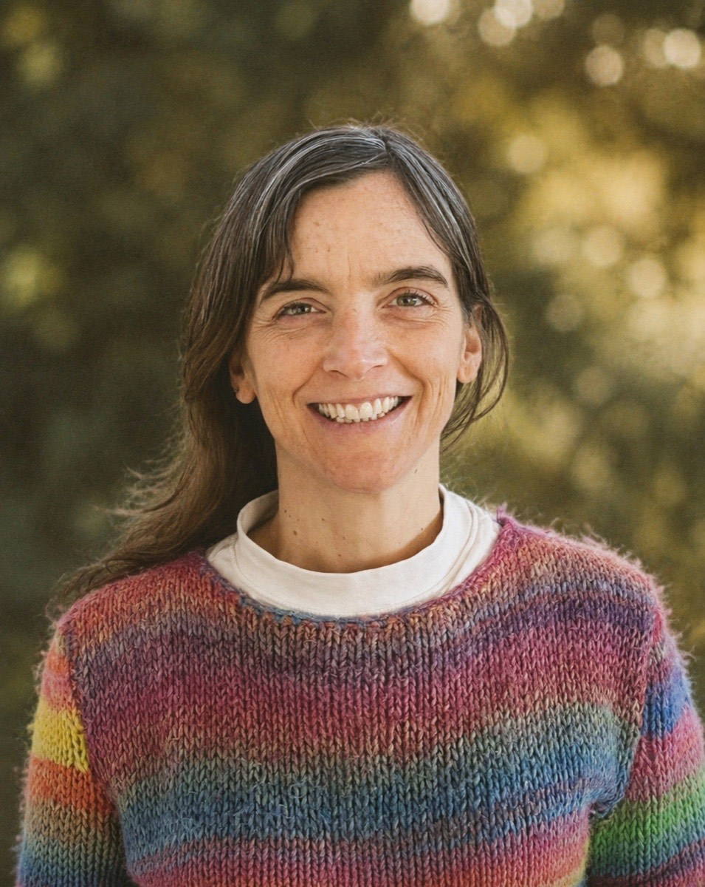

Acompañamiento en el final de la vida con presencia y dignidad
Doula de fin de vida.
Frutillar, Chile

Quién soy
Soy Josefa y diversas experiencias me acercaron a la vocación de doula. Hace varios años murió mi segunda hija antes de nacer. La sola y única presencia de una enfermera que me tomó la mano, me miró a los ojos y estuvo a mi lado, me ayudó a transitar con más suavidad el dolor. Comprendí que para acompañar no se necesitan estrategias sofisticadas ni palabras perfectas, sino una presencia genuina y libre de juicios.
He complementado esta vocación con formación técnica y práctica para sostener procesos de fin de vida. Estoy certificada como Doula de Fin de Vida por la Fundación El Faro (Argentina), además de contar con un Diplomado en Cuidados Paliativos Interdisciplinarios de la Universidad Católica y un curso de Acompañamiento Compasivo (Fundación EKR México). Soy socióloga de profesión y en mi doctorado hice una tesis sobre el cuidado de personas mayores que me ayudó a comprender lo fundamental que es su dimensión emocional y lo distintas que son las experiencias cuando hay apoyo.
“Creo en la autonomía en el proceso de morir y en la importancia de acompañar con presencia y desde la ética.”
Qué es una doula de fin de vida
Las doulas de fin de vida acompañamos a personas que están atravesando una enfermedad avanzada o la etapa final de su vida, y a sus seres queridos. Ofrecemos presencia, orientación, escucha, sentido, dignidad y contención.
Qué hacemos
Apoyamos a las personas que están transitando la etapa final de su vida y a su entorno cercano en:
-
01
Planificación y autonomía
Colaboramos en la redacción de voluntades anticipadas, ayudamos a definir los deseos de la persona y facilitamos la planificación de los cuidados al final de la vida.
-
02
Apertura de espacios de conversación y contención emocional
Brindamos un espacio para hablar abierta y francamente sobre la muerte, facilitando conversaciones difíciles y sobre temas pendientes, escuchando de forma activa y ofreciendo contención a la persona y a su familia.
-
03
Exploración de sentido, legado y espiritualidad
Apoyamos las prácticas espirituales de todos los involucrados, explorando el sentido de la vida y el legado de quien se encuentra en la etapa final. Respetamos todas las creencias religiosas y formas de espiritualidad.
-
04
Acondicionamiento del entorno
Desarrollamos un plan para definir cómo se ve, se siente y se escucha el espacio que rodea a la persona, creando un ambiente de calma y fomentando formas apropiadas de contacto físico.
-
05
Soporte práctico y respiro al cuidador
Proporcionamos momentos de descanso a los cuidadores principales y explicamos los signos y síntomas propios del proceso de muerte.
-
06
Rituales, homenajes y despedidas
Incorporamos tradiciones existentes o ayudamos a crear nuevos rituales para marcar momentos especiales, y apoyamos en la organización de homenajes conmemorativos.
-
07
Acompañamiento en el duelo
Ayudamos a procesar las emociones y experiencias de los seres queridos, continuando el apoyo al entorno cercano durante las primeras etapas del duelo tras el fallecimiento.
Las doulas no realizamos tareas médicas ni reemplazamos a los equipos de salud, trabajamos en conjunto con ellos para facilitar el tránsito en la etapa final de la vida.
Preguntas frecuentes
¿Cuándo es el mejor momento para llamarme?
Tras recibir el diagnóstico de una enfermedad grave o avanzada, o durante las semanas, días u horas finales de un ser querido, o después de su fallecimiento, para recibir compañía en los primeros momentos de duelo y organizar homenajes y ritos de despedida. Si eres una persona de edad avanzada y deseas planificar la etapa final de tu vida, también puedes llamarme.
¿Trabajas con personas de todas las creencias religiosas?
Sí. Acompaño a personas de todas las creencias religiosas, espiritualidades, así como a personas ateas y agnósticas. Proveyendo de un espacio plenamente inclusivo y respetuoso con la visión de cada individuo.
¿Reemplazas al médico o al psicólogo?
No. Soy un apoyo complementario. Si necesitas derivación a otro profesional, te puedo orientar.
¿Trabajas de forma presencial o remota?
Ambas. Según tu ubicación y necesidad. De manera presencial trabajo en la comuna de Frutillar, de Puerto Varas y en los alrededores.
¿Puedes acompañar a personas que están en el hospital?
Sí, acompaño a personas que están en sus casas o en el hospital.
¿Cuánto cuesta?
Cada sesión de acompañamiento presencial cuesta $35.000 y online $25.000. Sin embargo, quisiera que todas las personas que necesiten acompañamiento no dejen de recibirlo por razones económicas. Avísame si no puedes pagarlo.
EscríbemeContacto
Si necesitas que te acompañe a transitar el final de tu vida o la de algún ser querido, contáctame.
Escríbeme por WhatsApp